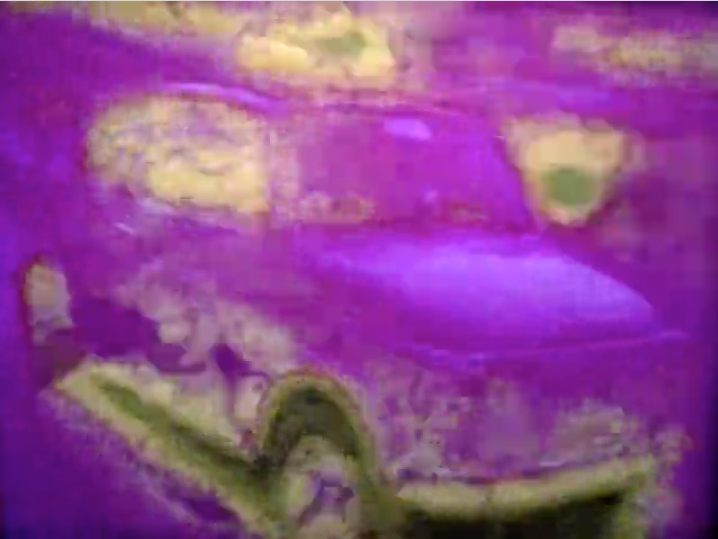
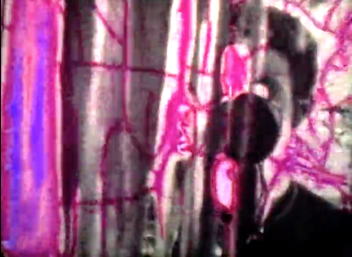

JUEGO


Gioco
Super-8 - 3' - Italia, 1999
Dirigido por
Enrico Mandirola
Había una vez una selva.
Caminando por las calles de los químicos.
Autorretrato disolviéndose.
Screenings:


Gioco
Había una vez una selva.
Caminando por las calles de los químicos.
Autorretrato disolviéndose.
Screenings: